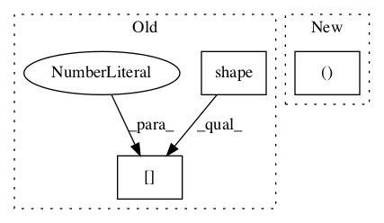

119e54a353513ff53d4f91b258dff2f8dbecbe5a,tgen/lexicalize.py,RNNLMFormSelect,_init_neural_network,#RNNLMFormSelect#,278

Before Change
self._cell = tf.contrib.rnn.BasicLSTMCell(self.emb_size)
if re.match(r"/[0-9]$", self.cell_type):
self._cell = tf.contrib.rnn.MultiRNNCell([self.cell] * int(self.cell_type[-1]))
self._initial_state = self._cell.zero_state(tf.shape(self._inputs)[0], tf.float32)
// embeddings
emb_cell = tf.contrib.rnn.EmbeddingWrapper(self._cell, self.vocab_size, self.emb_size)
After Change
inputs = [tf.squeeze(input_, [1])
for input_ in tf.split(axis=1, num_or_size_splits=self.max_sent_len, value=self._inputs)]
if self.bidi:
enc_outputs, _, _ = tf.nn.static_bidirectional_rnn(emb_cell, emb_cell, inputs, dtype=tf.float32)
enc_size = 2 * self.emb_size
else:
enc_outputs, _ = tf.nn.static_rnn(emb_cell, inputs, dtype=tf.float32)
In pattern: SUPERPATTERN
Frequency: 4
Non-data size: 3
Instances
Project Name: UFAL-DSG/tgen
Commit Name: 119e54a353513ff53d4f91b258dff2f8dbecbe5a
Time:
Author: null
File Name: tgen/lexicalize.py
Class Name: RNNLMFormSelect
Method Name: _init_neural_network
Project Name: GPflow/GPflow
Commit Name: 8259acbe363ecc589103678cc7402c2cf54ea564
Time:
Author: null
File Name: gpflow/kernels/statics.py
Class Name: White
Method Name: K
Project Name: asyml/texar
Commit Name: ecbe066e40882b166401b70ae9c4f1d535c93b12
Time:
Author: null
File Name: texar/losses/adv_losses.py
Class Name:
Method Name: binary_adversarial_losses
Project Name: GPflow/GPflow
Commit Name: 8259acbe363ecc589103678cc7402c2cf54ea564
Time:
Author: null
File Name: gpflow/kernels/statics.py
Class Name: Static
Method Name: K_diag